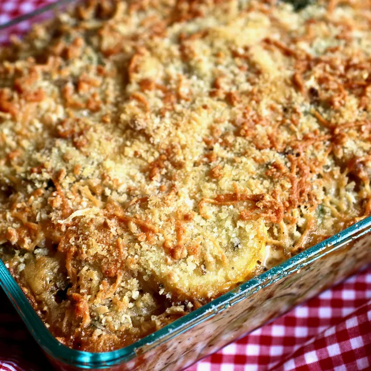

Gratin de courgettes

Description
Ce plat idéal en hiver vous régalera néanmoins en toutes saisons.
Au besoin, servir avec une salade ou un bol de soupe.
Ingredients
- Passata de tomate
- Viande hâchée
- Courgettes
- Fromage râpé
- Riz
Etapes
- Faire chauffer une casserole d'eau à ébulition.
- Coupez les courgettes en rondelles.
- Faire cuire le riz.
- Disposer dans un ramequin tous les ingrédients.
- Enfourner.
- Une fois le plat bien gratiné, servir.